Idéal
2011
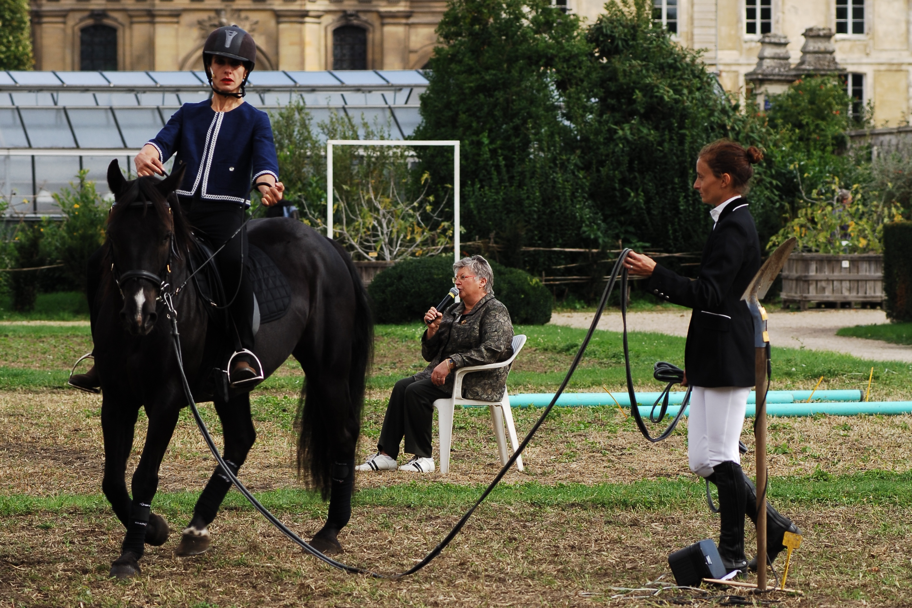
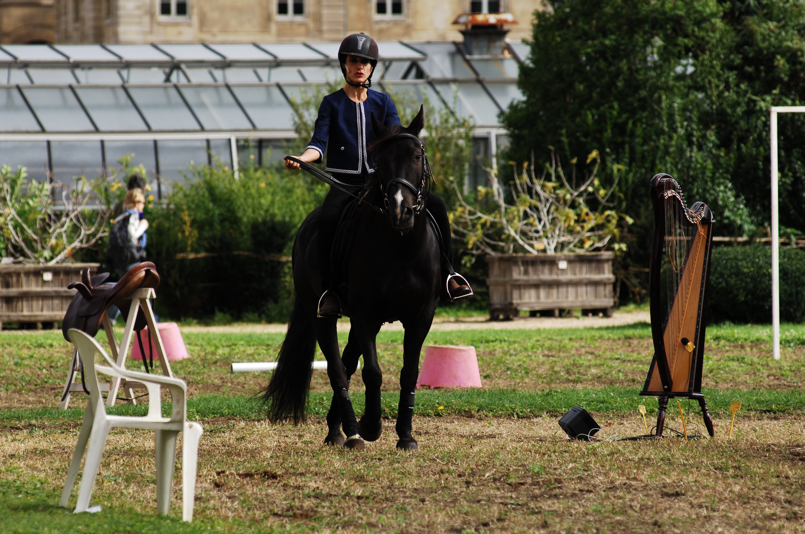


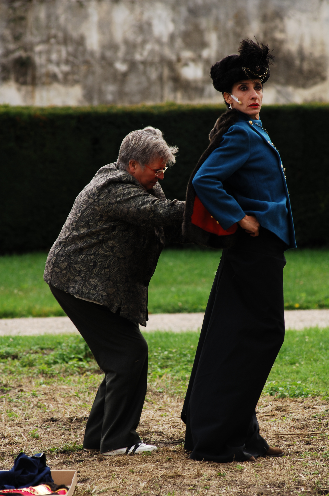
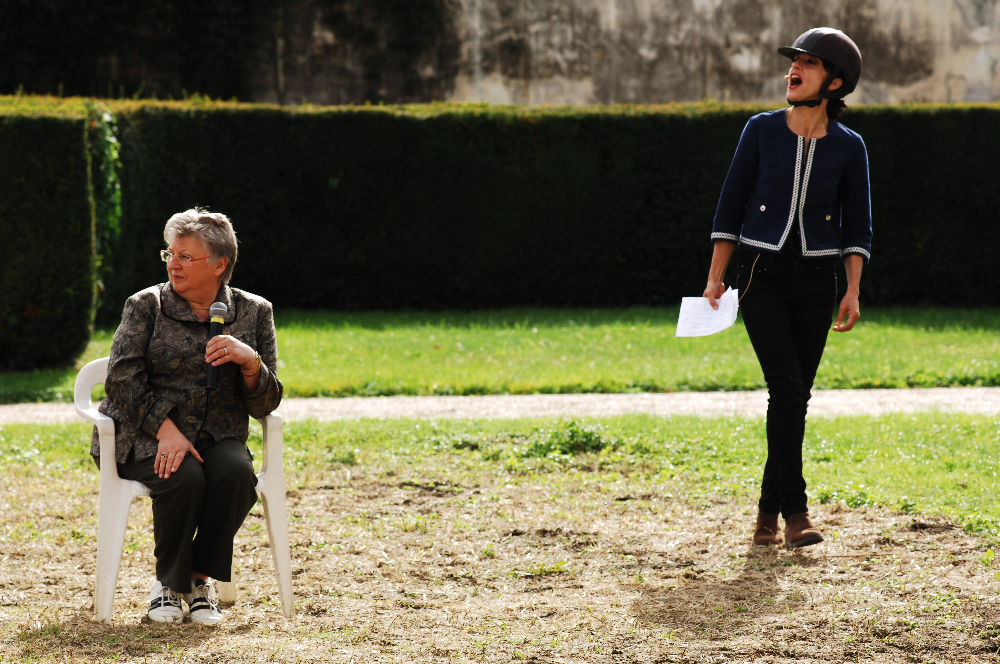
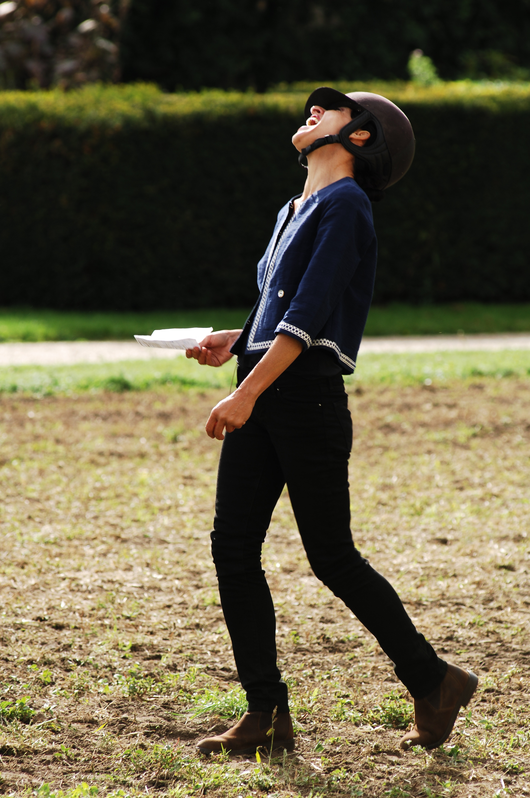

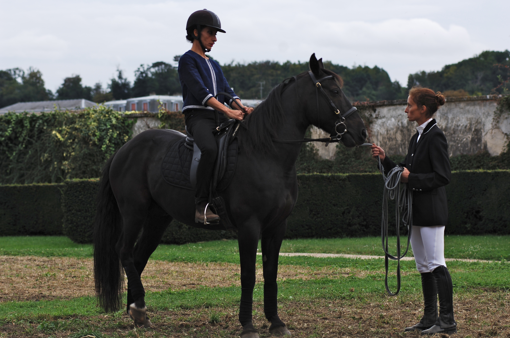
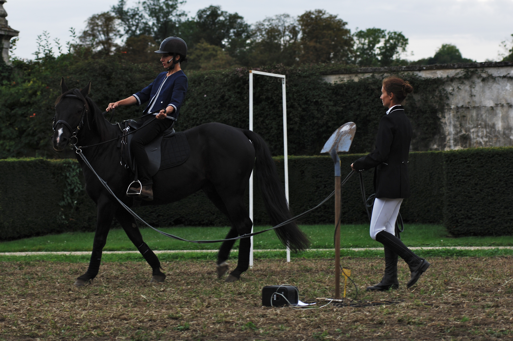
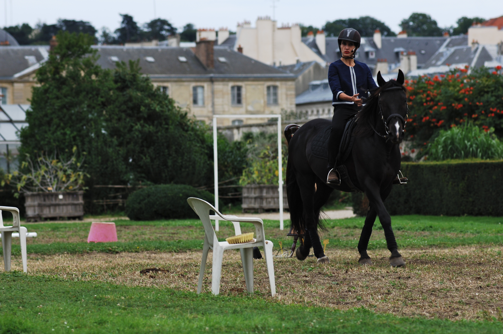
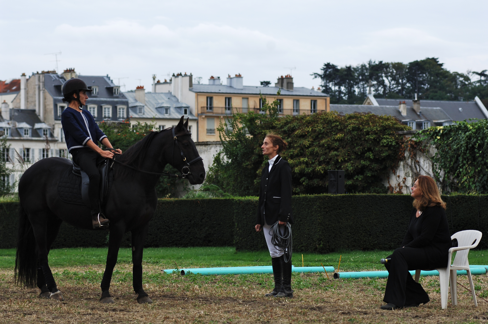
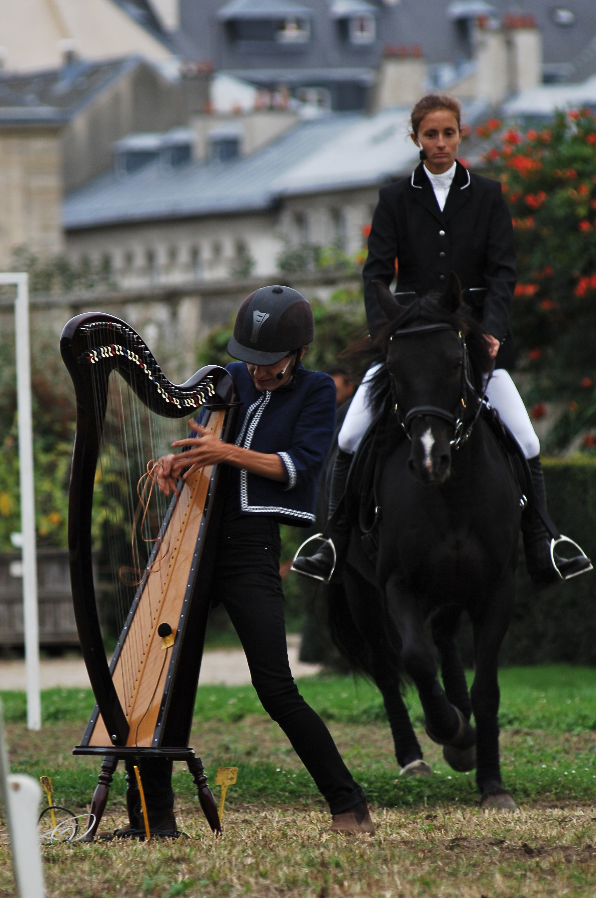
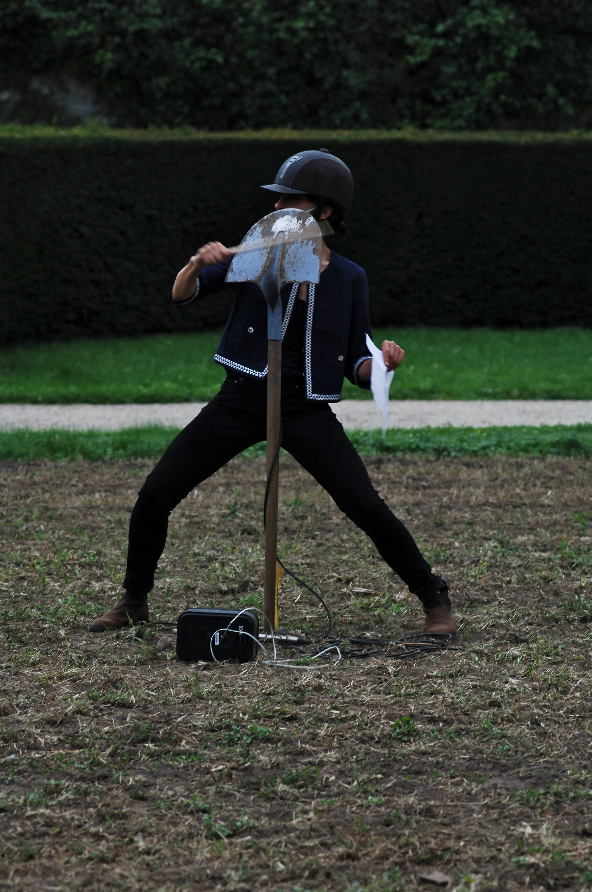
A cheval au Potager Idéal du Roi à Versailles
Présenté au Festival Plastique Dance Flore
à Versailles, les 16, 17 et 18 septembre 2011
Chorégraphie un débordement du cadre discipliné du Potager de la Cour royale à Versailles.
Sur un vaste gazon étiré, le regard doit se dérouler selon des perspectives radicales d’éloignements et de rapprochements. Tout cela est émaillé – mais non encombré – de présences sobres de quelques chaises, d’une harpe, d’éléments de diffusion sonore, d’une pelle plantée en terre par le manche, de portiques, barres et plots, disséminés dans un paysage où se disputent verticalités et horizontalités. Il faut encore y rajouter une sensation d’horizon urbain très dégagé, et de houleuse vastitude d’un sombre ciel d’automne. Déjà, rien d’ennuyeux. Les êtres vivants, à présent : un beau cheval d’équitation, puis trois femmes. L’écuyère attitrée de la bête, volontiers monitrice en démonstration de sport équestre. Plus âgée, assise à la façon d’une aimable promeneuse, une conférencière, historienne de la relation entre la femme et le cheval – et en elle-même alliage délicieux de développements doctes et de décontraction bon enfant. Où l’on apprend qu’à ce jour, huit cavaliers sur dix sont des cavalières. Et qu’historiquement, les époques n’ont pas manqué qui ménagèrent un large accès au cheval pour la gent féminine – nécessités d’usage obligent – de sorte qu’un faisceau serré de significations, préceptes, considérations, s’y rattachèrent, permettant de nourrir une lecture de ces usages au jour des théories du genre. C’est la troisième femme qui s’en occupe plus précisément : Claudia Triozzi, qui performe son désir de connaissances en même temps que sa ferme intention, traduite en actes, de s’initier personnellement à l’équitation. Une dimension joyeusement loufoque ne cesse de rôder au cœur de cette situation improbable, riche en emprunts vestimentaires, tenues corporelles marquées, commentaires et réparties à la volée. Cette vivacité des situations, entretenue par l’artiste, joue de la disparité des profils humains réunis dans cette entreprise, comme de la présence toujours noble et vaguement inquiétante d’un animal aux réactions jamais totalement prévisibles.
Relances d’essais, actions par digression, sagacité des commentaires, se tissent dans un jeu indisciplinaire de rebonds entre performances physiques, croisements discursifs, référencements théoriques, impertinences poétiques. Claudia Triozzi ne s’y départit pas d’une intrépidité de l’instant, émaillée d’éclats tout autant qu’elle maîtrise farouchement la lignée globale de son déroulé. On en est tour à tour perplexe, amusé, enseigné, et bien entendu désarçonné. Il y a de la drôlerie. Et plus. Comme un soupçon d’inquiétude.
Article: Idéal de Claudia Triozzi, festival Plastique Danse Flore, Catherine Alves
Conception et interprétation Claudia Triozzi
Avec Anne-Laure Chalumeau, et son cheval Clyde
Son et voix Christian Sotomayor et Claudia Triozzi
Remerciements à Rosine Lagier
Photographie Olivier Charlot